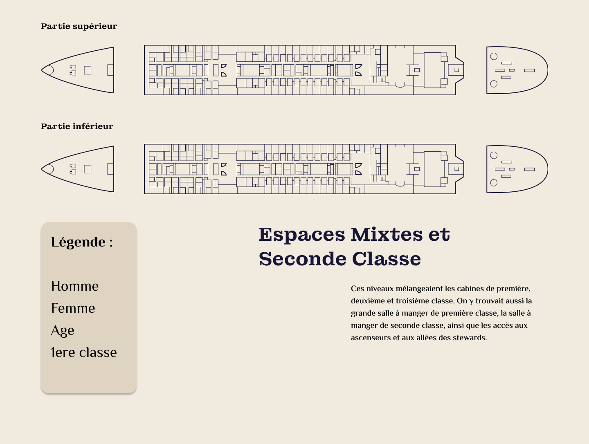

DataPlay
Le point de départ
Ce projet, réalisé en groupe de quatre, consistait à exploiter des jeux de données de manière créative. Après un brainstorming approfondi en équipe et des recherches sur différents sujets, nous avons choisi de travailler sur les chiffres liés au tragique naufrage du Titanic. Pourquoi ce choix ? D’abord parce que le sujet nous intéressait tous, mais surtout pour faire prendre conscience de l’ampleur de la tragédie à travers des données concrètes.

La réflexion créative
Une fois le concept défini, nous avons structuré nos idées de manière cohérente. Les premières propositions ont été bien accueillies, même si certaines, comme l’effet de scroll, ont finalement été écartées.
Nous nous sommes ensuite orientés vers une expérience immersive : un formulaire où l’utilisateur renseigne ses informations comme s’il achetait un billet pour embarquer à bord du Titanic. En fonction des données saisies (âge, genre, classe…), un taux de survie personnalisé est généré — une manière plus personnelle de faire ressentir l’impact du drame.
En parallèle, nous avons conçu des schémas interactifs représentant les ponts du navire, annotés pour visualiser le nombre de victimes selon différents critères.
Conception du design
On a commencé par la création du logo, puis j’ai participé au design sur Figma de la page de chargement, pour poser l’ambiance dès l’arrivée sur le site. J’ai également contribué à la conception du formulaire immersif.
On a ensuite travaillé sur les éléments graphiques, notamment les plans du Titanic (vue ¾ et vue du dessus) auxquels j'ai apporté ma contribution, un travail précis pour un rendu fidèle et lisible. En parallèle, on a conçu le ticket d’embarquement, ajusté notre palette de couleurs et structuré l’ensemble pour assurer une identité graphique cohérente.
De mon côté, j’ai également lancé un compte Instagram et réalisé une première publication, afin de donner de la visibilité au projet. Enfin, pour ajouter une dimension plus ludique, nous avons développé un mini-jeu des 7 différences en lien avec notre univers visuel, histoire de capter l’attention autrement qu’avec des données brutes.
Interactivité & animations immersives
Nous avons ensuite codé, pour rendre notre projet concret. J’ai également participé à certaines parties, notamment les grids et la position des éléments du format desktop. L’animation et l’interactivité étaient des aspects essentiels du projet. Nous avons donc ajouté de petites animations dynamiques pour assurer une expérience utilisateur fluide. L’ajout des points interactifs a permis de renforcer l’aspect immersif de notre projet.
Préparation de la présentation
La dernière phase du projet a été consacrée à la préparation de la présentation finale. Je me suis concentré sur la conception du stand de présentation: création d’une affiche promotionnelle qui reprend l’univers du site, et un roll-up avec un visuel du site, qui donne tout de suite une idée du projet.
Pour renforcer l’immersion, on a ajouté une musique d’ambiance jouée en live par un membre de l’équipe, et opté pour une tenue inspirée de l’époque afin de plonger le jury dans l’ambiance du Titanic jusqu’au bout.
Ce que ce projet nous a apporté
Ce projet nous a permis d’allier créativité, rigueur et travail d’équipe pour concevoir une expérience engageante et interactive. En surmontant divers défis techniques et artistiques, nous avons transformé une idée en un projet abouti, fidèle à notre vision.
Il nous a également permis de renforcer nos compétences en développement collaboratif via GitHub, en apprenant à travailler efficacement en équipe sur un même dépôt. Enfin, nous avons découvert et exploité le potentiel de la librairie GSAP, qui nous a permis d’ajouter des animations fluides et immersives, renforçant l’impact visuel et l’expérience utilisateur.